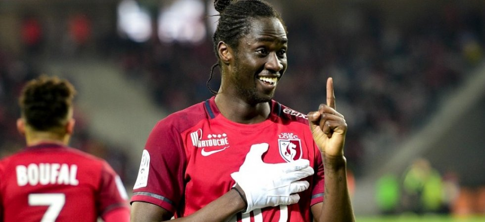
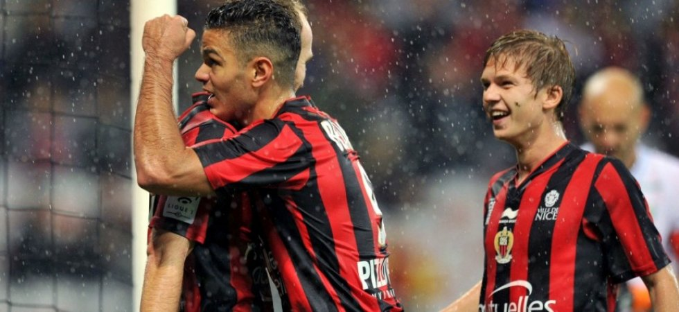

Le LOSC a corrigé Monaco sur sa pelouse du stade Pierre-Mauroy (4-1). Une prestation majuscule qui peut être un
tournant dans cette fin de saison pour les deux équipes. Car au terme de la 33eme journée, c'est bien Lyon le nouveau dauphin du PSG.
Et si cette 33eme journée était le point de départ du sprint final ? Alors que l'Olympique Lyonnais s'est emparé de la deuxième place
de la Ligue 1, c'est le LOSC qui se rapproche des places européennes en s'imposant très largement face à l'AS Monaco (4-1). Des Monégasques
qui ne cessent de régresser, semaine après semaine,
et qui vont désormais devoir regarder dans le rétroviseur afin de rester sur le podium.
Dire que les hommes de Leonardo Jardim ont livré une prestation insipide ce dimanche sur la pelouse lilloise ce dimanche est un euphémisme.
Les joueurs du Rocher ont craqué dans les grandes largeurs et ont livré une prestation des plus inquiétantes. L'esprit collectif en berne,
Jérémy Toulalan et les siens n'ont rien montré durant 90 minutes. Seuls quelques éclairs de Bernardo Silva et du réhabilité Nabil Dirar ont
permis à l'ASM d'y croire en première période. Mais le retour des vestiaires a exposé au grand jour les limites de cette équipe en pleine implosion.
Monaco, qui n'a remporté qu'une seule de ses six dernières rencontres, voit désormais son avenir s'assombrir. Au soir de la 28eme journée,
les hommes de Leonardo Jardim comptaient huit points d'avance sur le troisième. Les voici relégués au troisième rang cinq journées plus tard.
Cinq journées, c'est ce qui reste aux Lillois pour y croire. Désormais septièmes de Ligue 1, les hommes de Frédéric Antonetti sont revenus à
six points de leur victime du jour. Les Dogues ont pris 15 points lors des six derniers matchs. C'est neuf points de plus que Monaco sur la même période.
Des Monégasques en pleine crise et qui voient un groupe de concurrents revenir sur ses talons. Ce sprint final s'annonce épique.

Porté par un Hatem Ben Arfa auteur de son premier triple en L1, Nice a atomisé Rennes dimanche dans le duel des outsiders pour
le podium (3-0). Une semaine avant de se rendre à Lyon, les Niçois ont envoyé un message fort.
Rennes va longtemps faire des cauchemars de Nice et d'Hatem Ben Arfa. Déjà humiliés par les Aiglons au match aller au Roazhon Park (1-4), les Bretons
ont de nouveau pris le bouillon dimanche (3-0). Une démonstration azuréenne qui entérine le statut d'outsiders numéro 1 des hommes de Claude Puel dans
la course au podium. D'autant que se profile la semaine prochaine un déplacement à Lyon qui comptera double pour le sprint final en L1, les Niçois
n'ayant plus que deux points de retard sur l'OL et l'ASM. Auteur d'une kyrielle de matchs aboutis cette saison, le GYM a néanmoins rendu une de ses
copies les plus impressionnantes en en faisant qu'une bouchée d'un concurrent direct dans le haut du tableau.
Le score ne reflète même qu'à moitié l'écart de niveau constaté sur la pelouse de l'Allianz Riviera, tant les Azuréens ont dominé leur sujet
en première période. Ils ont dominé dans l'impact physique, animé leurs couloirs avec brio et maîtrisé les débats au milieu de terrain.
Cette performance collective de haut niveau (66% de possession dans le premier acte, 55% en fin de match) a été sublimée par le talent de Ben Arfa.
Il a marqué dans tous les styles : un penalty, un tir du droit pour conclure un mouvement collectif splendide et une frappe du gauche au bout d'un
rush en solitaire. Après l'heure de jeu, les Niçois ont géré leur avantage sans forcer et les Rennais, jamais dans le coup, ont rapidement baissé les bras.
Après avoir pris treize points sur quinze possibles, les Bretons connaissent un spectaculaire coup d'arrêt comme ils en sont coutumiers
et perdent du terrain sur le tiercé de tête. Et pendant ce temps-là, Nice s'y incrusterait en cas de succès au Parc OL vendredi prochain.
La L1 version 2015-16 n'a certainement pas fini de nous surprendre...